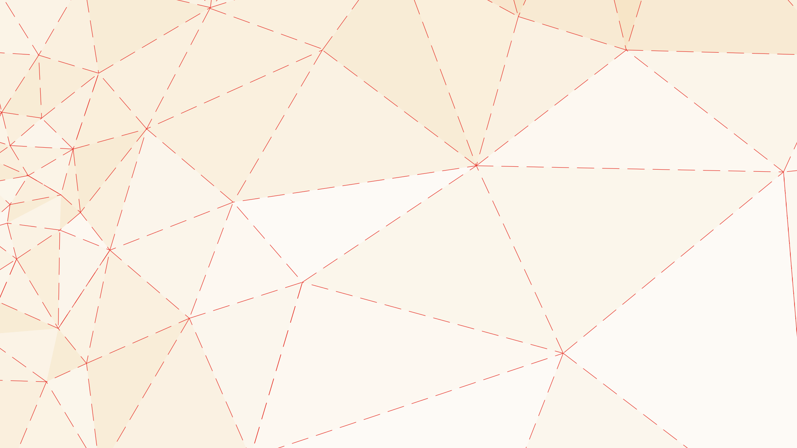

<audio src="audios/FUNDO/arte_na_parede.mp3" autoplay loop><p>Seu nevegador não suporta o elemento audio.</p></audio>
<iframe src="https://www.youtube.com/embed/9HgMm_EqjIs?version=3&autoplay=1&controls=0&loop=1&rel=0&showinfo=0&modestbranding=1&playlist=9HgMm_EqjIs" frameborder="0" allow="autoplay; encrypted-media" allowfullscreen></iframe>

<a href="#b_" class="close"></a>
<svg class="layer default_nav" version="1.1" id="Layer_1" xmlns="http://www.w3.org/2000/svg" xmlns:xlink="http://www.w3.org/1999/xlink" x="0px" y="0px"
   viewBox="0 0 1920 1080" style="enable-background:new 0 0 1920 1080;" xml:space="preserve">
  <a xlink:href="#v_compartilhando"><polygon class="st0" points="1887.5,414.6 1147.6,399.6 1356.8,851.6 "/><text transform="matrix(0.983 0 0 1 1374.316 580.0812)">COMPARTILHANDO </text></a>
  <a xlink:href="#v_projetando"><polygon class="st1" points="456.1,767.3 728.5,680.3 563.3,484.5 "/><text transform="matrix(0.983 0 0 1 535.4625 657.2902)">PROJETANDO</text></a>
  <a xlink:href="#v_mao_na_massa"><polygon class="st3" points="353.2,310.6 176.2,359.3 237.7,176.5 "/><text transform="matrix(0.983 0 0 1 218.2468 281.7836)"><tspan x="0" y="0">MÃO NA </tspan><tspan x="6.5" y="18.4">MASSA</tspan></text></a>
</svg>
